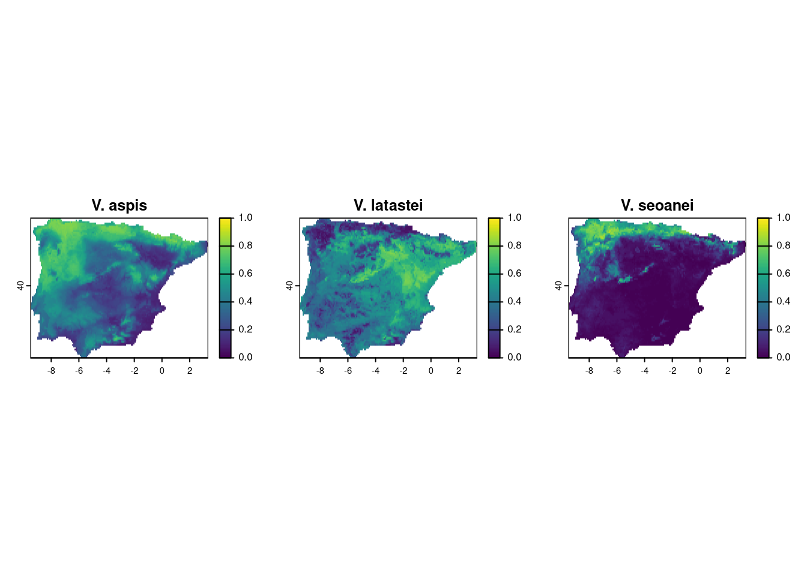
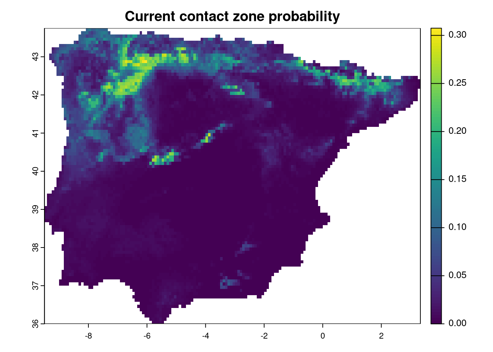
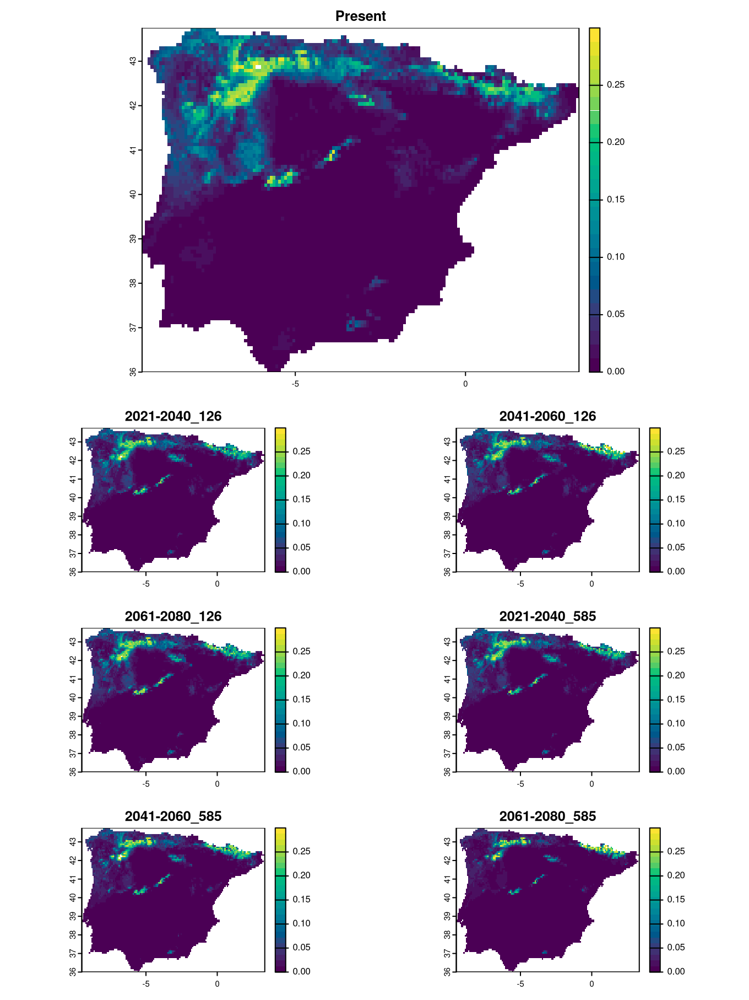
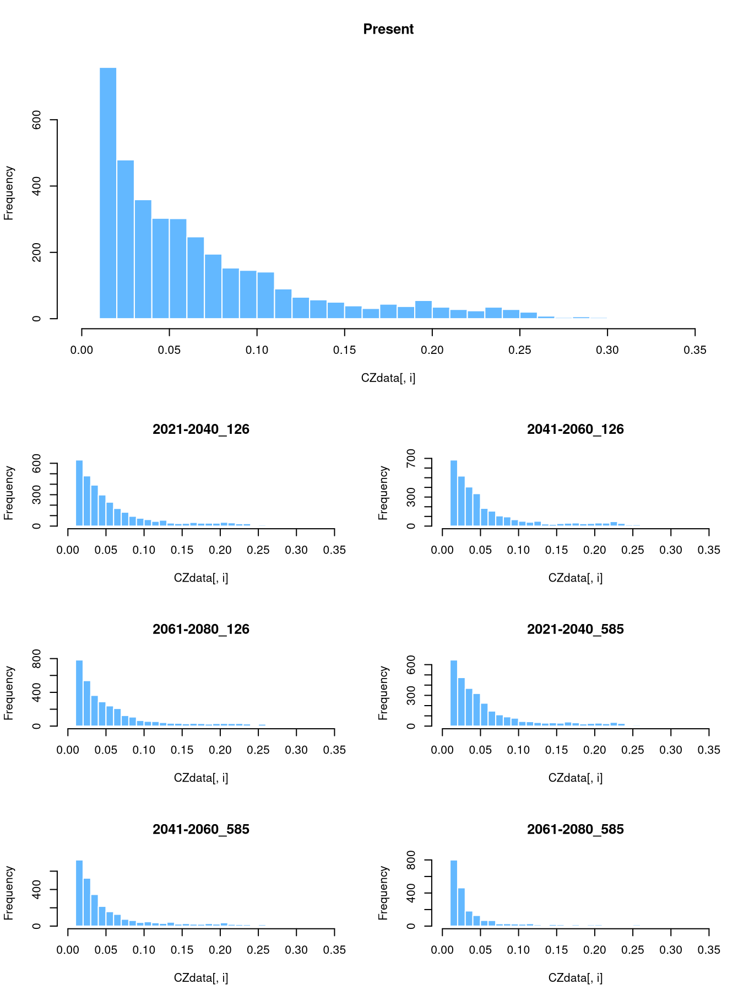

11 Chapter 9 - Finally, answering the question
In this chapter, we will open all projection rasters created previously and analyze how these predictions can help identify sympatric areas for the three species. As the results showed, the models reveal different relationships with the predictors, resulting in distinct distributions. How do these potential distributions intersect with each other?
We will use the terra package since most operations in this chapter involve geoprocessing with rasters. While any GIS software could be used, using terra allows us to automate some processes.
We can also prepare some variables to loop over future periods, as we did before.
We can begin by importing the rasters of the current projections for the three species. We divide by 1000 to get the projections in the range of 0 to 1.
va <- rast("models/Vaspis/proj_Current/proj_Current_Vaspis_ensemble.tif")[[1]]
va <- va / 1000
vl <- rast("models/Vlatastei/proj_Current/proj_Current_Vlatastei_ensemble.tif")[[1]]
vl <- vl / 1000
vs <- rast("models/Vseoanei/proj_Current/proj_Current_Vseoanei_ensemble.tif")[[1]]
vs <- vs / 1000We can plot the maps:
layout(matrix(1:3, 1))
plot(va, main="V. aspis", range=c(0,1))
plot(vl, main="V. latastei", range=c(0,1))
plot(vs, main="V. seoanei", range=c(0,1))
We need some processing to determine the sympatric zone between the vipers. Since we are using continuous probability maps, an easy way to estimate the maximum probability of finding all three species together is by calculating the product of the three maps. The potential maximum score would be 1, where all species have the highest probability, while any location with a probability of 0 for any species will have a sympatry probability of zero.
Additionally, there are other methods to calculate sympatry. For instance, using the binary presence/absence maps produced earlier, the sum of all maps would provide a range of values from 0 to 3, indicating how many species are present at each location.
Here, we will calculate the product of the probabilities:

We have to calculate the same for all combinations of age and ssp projections. For that we use the same style of nested loop we have been using. We will be adding layers to CZ raster with correct names, following the age_ssp order.
The logic of the loop is the following:
* for each combination of age and ssp:
1. Reconstruct the general name of the file
2. Reconstruct the path for V aspis projection file
3. Import the raster and divide by 1000
4. Reconstruct the path for V latastei projection file
5. Import the raster and divide by 1000
6. Reconstruct the path for V seoanei projection file
7. Import the raster and divide by 1000
8. Create the future prediction of contact zone as futCZ
9. name the layer correctly with age_ssp
10. Stack this layer to the CZ raster.
for (ssp in ssps) {
for (age in ages) {
nm <- paste0("proj_", age, "_", ssp)
vaFile <- paste0("models/Vaspis/", nm, "/", nm, "_Vaspis_ensemble.tif")
va <- rast(vaFile)[[1]]/1000
vlFile <- paste0("models/Vlatastei/", nm, "/", nm, "_Vlatastei_ensemble.tif")
vl <- rast(vlFile)[[1]]/1000
vsFile <- paste0("models/Vseoanei/", nm, "/", nm, "_Vseoanei_ensemble.tif")
vs <- rast(vsFile)[[1]]/1000
# Produce Future contact zone and rename accordingly to age and ssp
futCZ <- va*vl*vs
names(futCZ) <- paste0(age, "_", ssp)
# Grow CZ raster with each futCZ to store all in same file
CZ <- c(CZ, futCZ)
}
}We can now plot the raster or contact zone predictions.
layout(matrix(c(1,1,1,1:7), 5, byrow=TRUE))
plot(CZ[[1]], main=names(CZ)[1], col=hcl.colors(25), range=c(0, 0.3))
plot(CZ[[2]], main=names(CZ)[2], col=hcl.colors(25), range=c(0, 0.3))
plot(CZ[[3]], main=names(CZ)[3], col=hcl.colors(25), range=c(0, 0.3))
plot(CZ[[4]], main=names(CZ)[4], col=hcl.colors(25), range=c(0, 0.3))
plot(CZ[[5]], main=names(CZ)[5], col=hcl.colors(25), range=c(0, 0.3))
plot(CZ[[6]], main=names(CZ)[6], col=hcl.colors(25), range=c(0, 0.3))
plot(CZ[[7]], main=names(CZ)[7], col=hcl.colors(25), range=c(0, 0.3))
We can opt for other visualization strategies to show the change in the contact zone probabilities. For instance, we can show histograms of the probabilities to highlight how they will decrease for certain scenarios. The easiest way to do this is to extract the raster data into a data frame:
## Present X2021.2040_126 X2041.2060_126 X2061.2080_126 X2021.2040_585
## 18 0.09987750 NA NA NA NA
## 19 0.12561888 0.11822765 0.10352709 0.09530990 0.10332374
## 20 0.08930794 0.05946025 0.05605990 0.05412670 0.05696170
## 21 0.09405045 0.06034792 0.05766824 0.05757444 0.06232248
## 22 0.11647692 0.08230678 0.07885152 0.07984742 0.07826458
## 23 0.10401440 0.06464189 0.06400509 0.06364762 0.06510390
## X2041.2060_585 X2061.2080_585
## 18 NA NA
## 19 0.10677778 0.06060992
## 20 0.04717440 0.03103050
## 21 0.05130403 0.02991918
## 22 0.06388219 0.04501230
## 23 0.05319662 0.03448973As the whole projected area is dominated by near-zero values (low probability of contact), we will remove these values based on a very small threshold. This will prevent the histograms from being dominated by the large number of pixels with near-zero values, providing a clearer view of the changes in contact zone probabilities.
For the histograms, we need to define the width of the bars and the range of values. In this example, the values vary between 0 and 0.28, so we choose a width of 0.01 and create a sequence of cutting points (breaks).
We can retrieve the names of the layers in the raster to use as titles for plotting. The order of the layers corresponds to the order of columns in the data frame.
Instead of plotting each column individually, as we did above for plotting the rasters, we can use a for loop that iterates over the columns. We set some nice colors for the bars and plot!
layout(matrix(c(1,1,1,1:7), 5, byrow=TRUE))
for (i in 1:ncol(CZdata)) {
hist(CZdata[,i], breaks=brk, main=titles[i], col="steelblue1", border="white")
}
We can see that the worst-case scenario predicts a contraction of the contact zone to a narrow area by the end of the century. Currently, this area is where all three vipers are found together, while other regions represent high potential for all species, although not all species reach those areas. One reason could be that they are at the limit of their ecological niche, and one species may be excluded by another that is more dominant in the region.
We can write the raster to a file that can be opened in any GIS for further exploration of the results.
{r] writeRaster(CZ, "models/sympatry.tif")